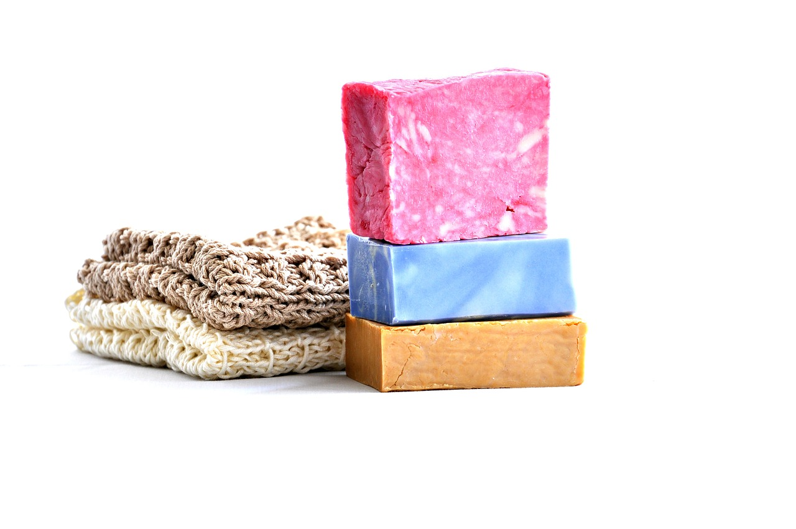
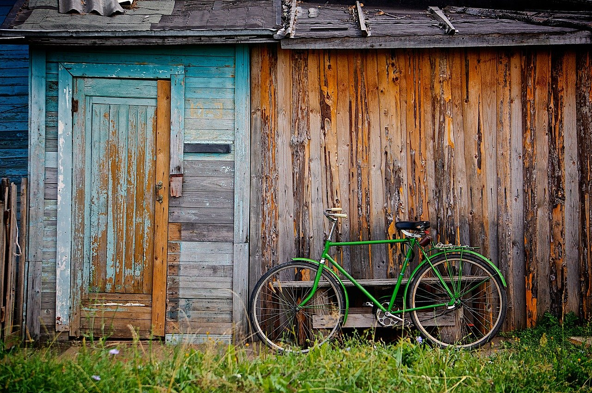
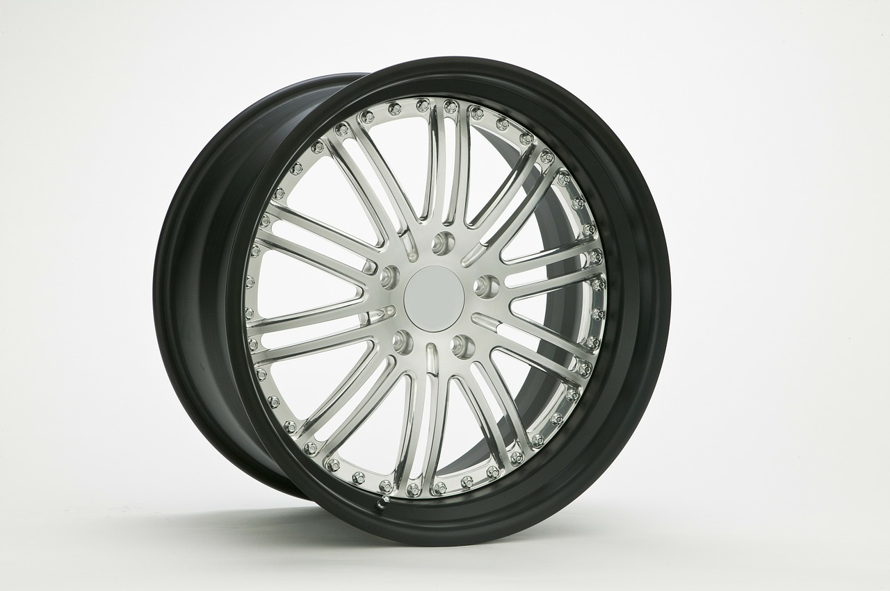
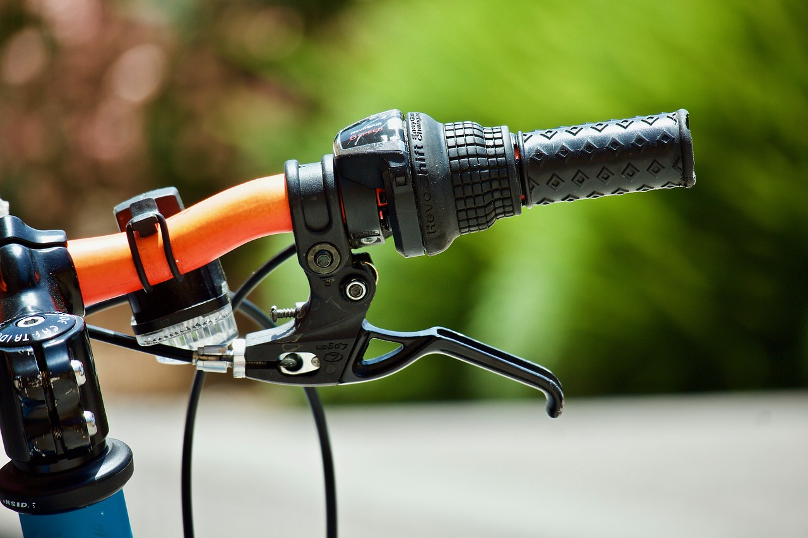
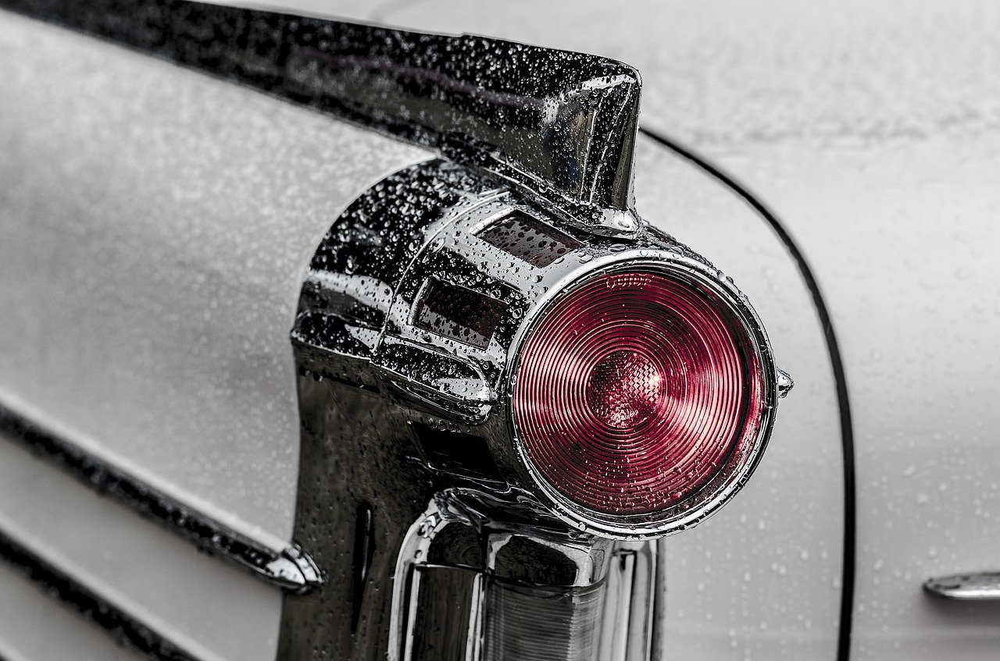

Tervetuloa pyöränhuoltosivustollemme!
Kuvakäsikirjoitus
Nettisivumme tarkoituksena on tarjota hyvä ohjepankki pyörän keväthuoltoon, sekä karttapalvelu lähimmän
vuokrapyörän löytämiseksi. Sivustollamme navigoidaan vasemmalla olevan valikon avulla. Mukavia
pyöränhuoltohetkiä!
1. Pyörän pesu

Puhdista pyörän runko joka paikasta miedolla saippuavedellä. Jos tässä vaiheessa huomaa jotain rikkinäistä
pyörässä, ei rikkinäistä
osaa kannata turhaan pestä. Isoimmat roskat kannattaa pyyhkäistä pois liinalla tai paperilla
jo ennen saippuavedellä pyyhkimistä. Rungon lisäksi myös vanteet on hyvä pyyhkiä saippuavedellä.
Kun pyörä on pääasiallisesti puhdistettu saippuavedellä, on edessä työläin mutta
tärkein osuus, eli
voimansiirron puhdistaminen, jolloin rattaat puhdistetaan ketjujen lisäksi sopivalla liuottimella. Ketjun voi
puhdistaa ketjupesurilla
tai esimerkiksi laittamalla sen rasiaan liuottimen kanssa ja ravistamalla. Tämä operaatio kannattaa toistaa
muutaman kerran. Puhtaan ketjun
on hyvä antaa kuivua, jotta liuottimet haihtuvat pois, ennen kuin niveliin laitetaan uusi öljy. Ylimääräinen
öljy pyyhitään rätillä pois.
2. Renkaat

Ensimmäisenä kannattaa tarkistaa, että renkaiden kuviointi ei ole kulunut pois, eli toisin sanoen, että renkaat
ovat vielä ajokunnossa. Jos renkaat ovat käyttökelpoiset eikä niissä ole reikiä, täytetään ne ilmalla.
Talvirenkaat
vaihdetaan tietysti pois jos sellaiset on alla.
3. Vanteet ja pinnat

Katso että vanteet eivät ole kovin käyrät tai kolhuilla. Varsinkin palajarrujen kanssa on tärkeää, että vanne
ei vietä liikaa oikealle tai vasemmalle. Katso myös, että pinnat ovat tarpeeksi kireällä ja että kaikki pinnat
ovat ehjiä.
Pinnat soivat suunnilleen samalla taajuudella niitä napauttaessa ideaalitilanteessa. Jos pinnojen kanssa on
ongelmia
eikä pyöränhuollosta ole suurempaa kokemusta, kannattaa suosiolla kilauttaa kaverille tai huoltoliikkeeseen.
Pinnojen
kiristys on haastava toimenpide.
4. Jarrut

Tarkista että jarrulevyt tai -palat eivät ole liian kuluneet. Kuluneet osat vaihdetaan uusiin. Tarkista myös,
että
jarrut ovat tarpeeksi kireällä, eivätkä jarruvaijerit ole kuluneet. Jos jarruvaijerissa on yksikin säie poikki
se
kannattaa suosiolla vaihtaa ehjään.
5. Varusteet

Varmista että pyörästä löytyy tieliikennelain velvoittamat heijastimet ja valaisimet.